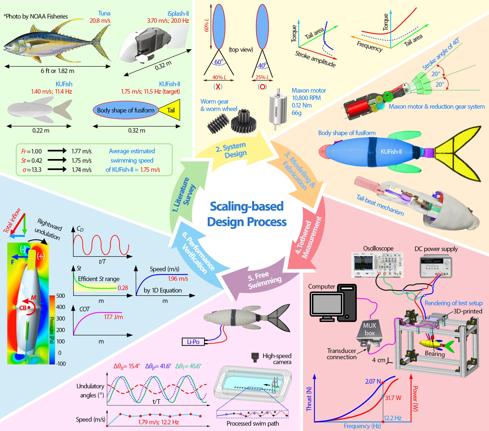

Authors: Nguyen, K. and Park, H.C., Available at SSRN (2025): 5920304
Abstract: The synchronous integration of multiple parameters in developing high-speed robotic fish remains a challenge. Consequently, most existing fish-like robots have been created through trial-and-error methods. This paper presents a comprehensive scaling-based design approach for developing a 0.32-m-long robot, KUFish-II, capable of achieving a target speed of 1.75 m/s or 5.5 body lengths per second (BL/s). This speed was predicted based on three physical parameters: Froude number, Strouhal number, and reduced frequency. To design a robot capable of achieving the speed, the proposed scaling law specified the stroke amplitude, fin area, tailbeat frequency, and torque needed for required thrust generation and high swimming efficiency. Subsequent experiments showed good agreement between the measured and predicted thrusts, frequencies, and swimming speeds. Swimming at a maximum speed of 1.79 m/s (5.6 BL/s), with a low Strouhal number and a narrow peak-to-peak amplitude of the tail, KUFish-II can be regarded as one of the few fast-swimming robots capable of achieving efficient locomotion with a low cost of transport. These results confirm the reliability of the proposed approach and highlight its potential use for designing efficient, largescale, fast-swimming robotic fish. (View at publisher)

A Robotic Fish Capable of Fast Underwater Swimming and Water Leaping with High Froude Number
Authors: Pham, T.H., Nguyen, K., Park, H.C., Ocean Engineering 268 (2023): 113512
Abstract: Natural underwater species outperform man-made underwater vehicles in many aspects. In this work, as our first effort to eventually mimic flying fish, a robotic fish capable of swimming fast and leaping out of water was developed, named KUFish. The thrust of KUFish was produced by a tail-beating mechanism driven by a DC motor in combination with reduction gears, four-bar linkage, and pulley-string mechanisms. The passive dynamic stability was implemented by the symmetric mass distribution, positive buoyancy, and lower center of gravity. A series of swimming experiments indicated that the KUFish could swim 0.68 m and leap out of the water with a speed of 1.35 m/s (6.1 BL/s) at an instant of 0.68 s after release. In addition to experimentation, a two-dimensional dynamic model was developed to predict the swimming behavior of the robot. The proposed dynamic model could reasonably capture the measured swimming performance of the robot before water leaping. The water leaping capability of the KUFish can be well supported by the computed Froude number of (1.08 or 0.92) in terms of the body faring length or robot length, respectively. The results from the current work can be useful for developing a flying-fish-like swimming robot in the future. (View at publisher)